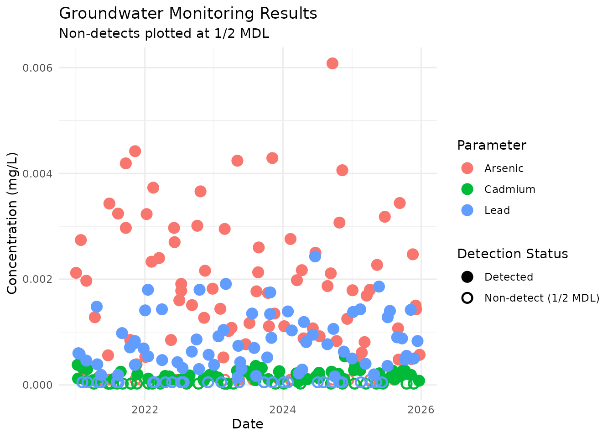
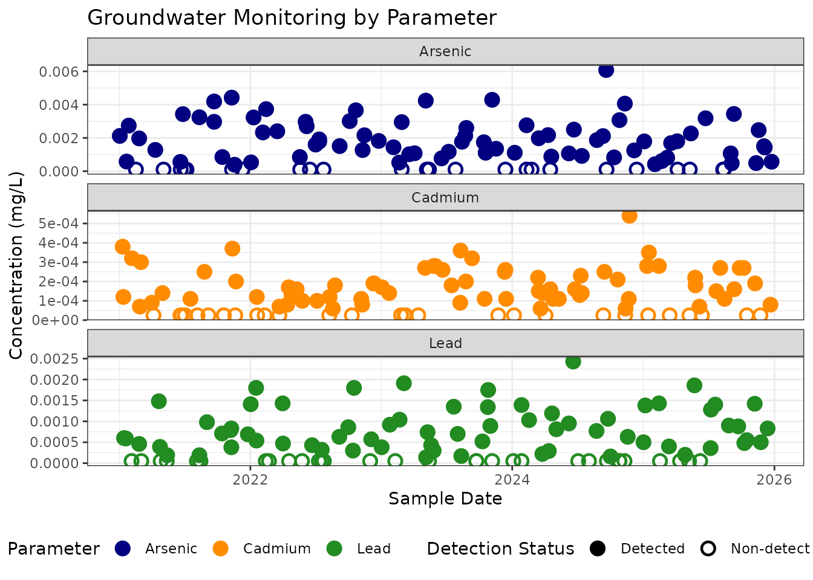

Plotting Left-Censored Data
left-censored-data.RmdIntroduction to Left-Censored Data
In environmental and laboratory data, analytical results are frequently “left-censored.” This occurs when a target compound is not detected above the laboratory’s Method Detection Limit (MDL). These non-detects (often reported as “ND” or flagged with a “U” qualifier) pose a visualization challenge.
A common standard is to plot non-detects at the MDL or at a fraction of the MDL (e.g., 1/2 MDL) using a distinct symbology.
The ggsuppress package can handle this row-by-row
dynamically. Let’s look at the built-in groundwater dataset
to see how.
library(ggsuppress)
library(ggplot2)
# View the structure of the data
head(groundwater[10:20,])
#> Sample_ID Location_ID Sample_Date Parameter Result Numeric_Result
#> 10 GW-2021Q1-MW-4 MW-4 2021-03-02 Cadmium 0.0003 0.00030
#> 11 GW-2021Q1-MW-4 MW-4 2021-01-27 Arsenic 0.00274 0.00274
#> 12 GW-2021Q1-MW-4 MW-4 2021-01-14 Lead 0.0006 0.00060
#> 13 GW-2021Q1-MW-5 MW-5 2021-02-27 Cadmium 7e-05 0.00007
#> 14 GW-2021Q1-MW-5 MW-5 2021-02-16 Arsenic ND NA
#> 15 GW-2021Q1-MW-5 MW-5 2021-02-04 Lead ND NA
#> Units Qualifier MDL RL Method
#> 10 mg/L NA NA EPA 200.8
#> 11 mg/L NA NA EPA 200.8
#> 12 mg/L NA NA EPA 200.8
#> 13 mg/L J 5e-05 2e-04 EPA 200.8
#> 14 mg/L U 2e-04 1e-03 EPA 200.8
#> 15 mg/L U 1e-04 5e-04 EPA 200.8Data Preparation Requirements
Notice that our groundwater dataset contains a character
Result column (which includes “ND” strings) and a
Numeric_Result column.
Important: ggsuppress requires a numeric y aesthetic. It is the user’s responsibility to coerce character results into numeric columns prior to plotting. In our Numeric_Result column, “ND” strings have been converted to NA.
Plotting Non-Detects Dynamically
To plot these non-detects at 1/2 their specific MDL, we map the MDL
column to the threshold and proxy aesthetics
directly inside the geom_point_suppressed() function.
We also must set suppress_na = TRUE so the engine knows
to catch those NA values and apply the proxy math to them.
ggplot(groundwater, aes(x = Sample_Date, y = Numeric_Result, color = Parameter)) +
geom_point_suppressed(
# Dynamically apply the MDL for each specific row
aes(threshold = MDL, proxy = MDL / 2),
suppress_na = TRUE,
size = 3,
stroke = 1.2
) +
# Adjust legend labels for detection status
scale_shape_suppress(
name = 'Detection Status',
labels = c(`FALSE` = "Detected", `TRUE` = "Non-detect (1/2 MDL)")
) +
theme_minimal() +
labs(
title = "Groundwater Monitoring Results",
subtitle = "Non-detects plotted at 1/2 MDL",
x = "Date",
y = "Concentration (mg/L)"
)
Handling Multiple Parameters
Because different chemicals have vastly different scales and MDLs, it is usually best practice to facet this data. Notice how ggsuppress handles the dynamic MDLs across the different facets, and safely ignores rows where a valid detect was measured but the MDL column was left blank (NA).
ggplot(groundwater, aes(x = Sample_Date, y = Numeric_Result, color = Parameter)) +
geom_point_suppressed(
aes(threshold = MDL, proxy = MDL / 2),
suppress_na = TRUE,
size = 3,
stroke = 1.2
) +
# Standard scale styling
scale_color_manual(
values = c("Arsenic" = "navy", "Cadmium" = "darkorange", "Lead" = "forestgreen")
) +
# Adjust legend labels for detection status
scale_shape_suppress(
name = 'Detection Status',
labels = c(`FALSE` = "Detected", `TRUE` = "Non-detect (1/2 MDL)")
) +
# Facet by parameter, allowing the y-axis scales to adjust freely
facet_wrap(~Parameter, scales = "free_y", ncol = 1) +
theme_bw() +
theme(legend.position = "bottom") +
labs(
title = "Groundwater Monitoring by Parameter",
x = "Sample Date",
y = "Concentration (mg/L)"
)